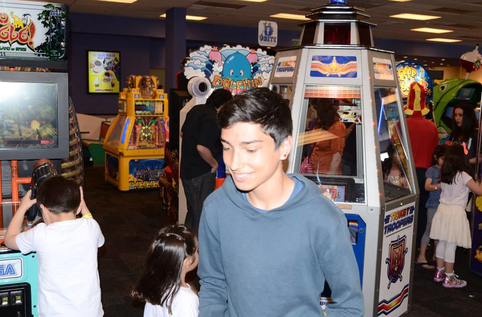
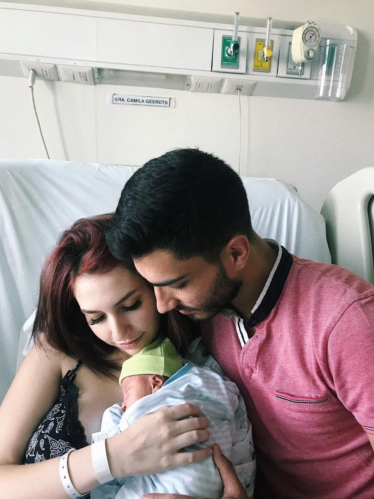

<div class="container animate fadeIn" fxLayout="row">
  <div fxFlex="100%">
    <div class="container__banner">
      <div class="banner__text">
        <span class="banner__title">Martin Barria</span>
        <p>Web developer</p>
        <button
          mat-icon-button
          style="color: #59c6a7;"
          aria-label="Example icon-button with a heart icon"
        >
          <mat-icon>favorite</mat-icon>
        </button>
      </div>
    </div>
    <div class="container__body">
      <span class="body__subtitle">Un poco sobre mi historia</span>
      <br />
      <br />
      <mat-divider></mat-divider>
      <br />
      <div class="history">
        <div class="history--kid">
          
          <p class="subtitle__history">
            A los 10 años, de lunes a sábado dentro de un Cyber en la esquina de
            mi casa, me la pasaba jugando con amigos juegos multiplayer, pero a
            esa edad no siempre uno tiene dinero disponible ni tampoco tenía tan
            claro el significado del mismo.
            <br />
            Cuando no tenía dinero acudía a pedirle a la dueña del Cyber que me
            dejara solucionar problemas de la impresora y bugs básicos del
            computador como activar o desctivar firewalls de windows, descargar
            flash adove para los clientes que necesitaban webs que requerían de
            ello, Etc... A veces entraba gente que necesitaban crearse una
            cuenta para correo o alguna otra página extraña y yo entraba en
            acción. Todo esto para que me pudiera regalar algunos minutos en
            algún computador y así poder disfrutar de mis juegos favoritos.
          </p>
        </div>
        <mat-divider></mat-divider>
        <div class="history--middle">
          
          <p class="subtitle__history">
            Ya poco después de cumplir 14, me empezaba a preguntar qué hay
            detras de todo lo que nosotros vemos frente a la pantalla del
            computador, las páginas webs, los juegos, estaba en una encrucijada
            preguntándome qué tipo de persona hace esto, y qué es lo que hace
            realmente para lograrlo. <br />
            Divagando por el internet logré encontrar un artículo referido al
            "Desarrolo de las páginas web". Esto me llevó a una pequeña
            introducción a HTML, logré crear mi primera interacción con la
            computadora, creando pequeños párrafos, algunas imágenes
            superpuestas encima de los textos, mi página se veía horrible, pero
            para mí era algo increíble. Luego fui descubriendo los estilos CSS
            de las páginas web, le fui dando un hermoso resultado a mi primer
            "Hola Mundo" en ese momento supe que esto era lo que me gustaba.
          </p>
          <mat-divider></mat-divider>
        </div>
        <mat-divider></mat-divider>
        <div class="history--advanced">
          
          <p class="subtitle__history">
            Después de haber creado un par de páginas webs con HTML y CSS, al
            pasar de los años fuí aprendiendo lo que le da vida a la web, el
            lenguaje Javascript, en ese entonces este lenguaje era
            considerablemente más dificil que el Javascript de hoy, por lo tanto
            mi cabeza explotaba creando funciones básicas. <br />
            Luego de pulir mis habilidades con Javascript, al pasar de los años
            descibrí un framework muy particular, fácil de uso, y bastante
            cómodo para mí, aquel frameworks llamado AngularJS (Angular en su
            primera versión), fué amor a primera vista jeje. Compré algunos
            cursos y puse en práctica mis habilidades en Javascript con este
            framework. Cuando ya había completado un par de cursos Online de
            Angularjs empecé a crear algunos proyectos personales y prototipos
            funcionales.
          </p>
        </div>
        <mat-divider></mat-divider>
        <br />
        <br />
        <span class="body__subtitle">Un cambio en mi vida</span>
        <br />
        <br />
        <div class="history--middle">
          
          <p class="subtitle__history">
            Ya con una buena base sólida de conocimientos en el desarrollo web
            empezaron mis primeros trabajos como Web developer, creando algunas
            páginas web con los lenguajes y librerías que conocía, desconociendo
            el valor de mi trabajo cobrando precios por muy bajos del promedio,
            pero en base a esa experiencia, fuí consolidando mis trabajos como
            desarrollador.
          </p>
          <p class="subtitle__history">
            A los 21 años, mi vida dió un rumbo maravilloso, ser padre de un
            hermoso bebé fué la noticia que me ayudó a crecer profesionalmente,
            ya es hora de dar el siguiente paso, tengo que dar lo mejor de mí,
            hay personas a las que hay que enorgullecer. Con bastante seguridad
            en mí, buscaba mi primer trabajo como Desarrollador, se me dió la
            oportunidad de trabajar para el Ejército de Chile, como
            Desarrollador Frontend Junior, mi primer empleo profesional.
          </p>
          <mat-divider></mat-divider>
        </div>
      </div>
    </div>
  </div>
</div>
